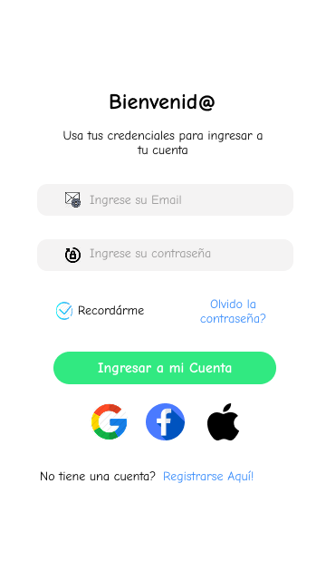
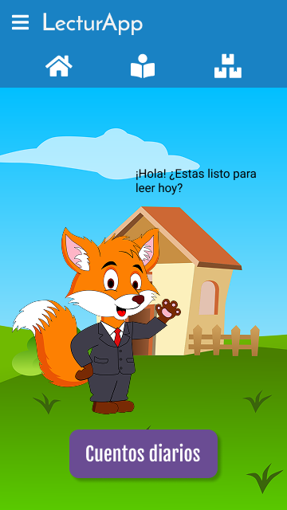
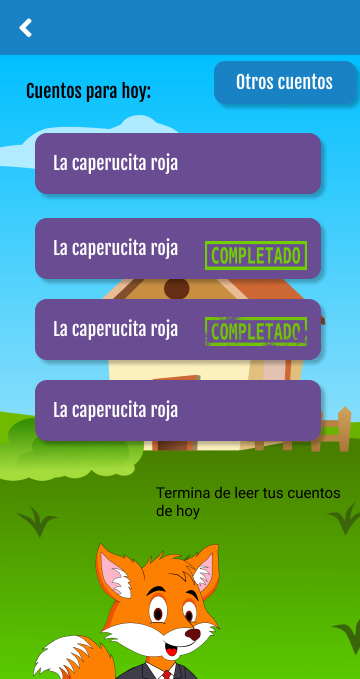
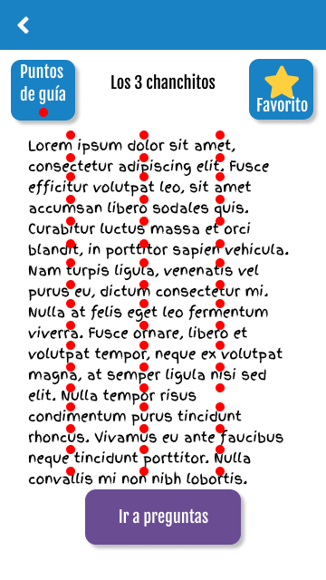
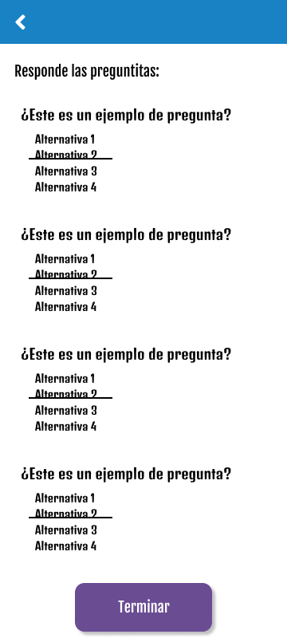
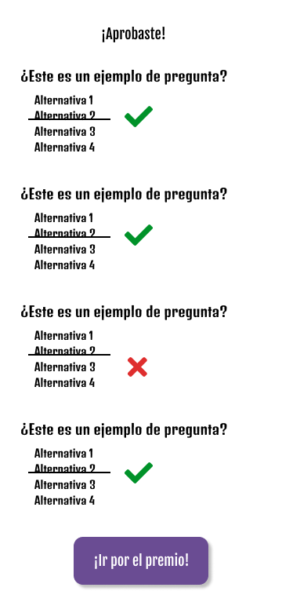
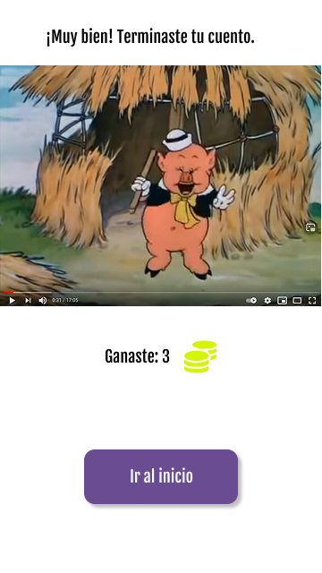
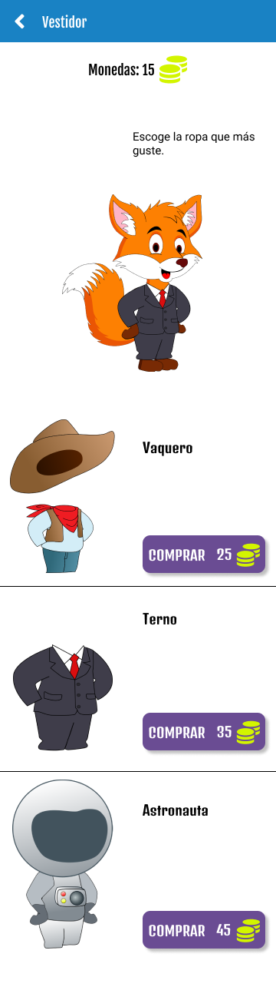
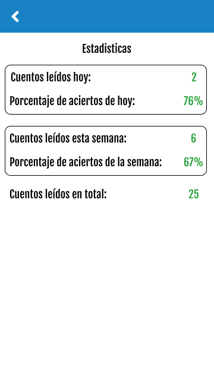

Mobile · Educación · Emprendimiento
LecturApp
App móvil educativa que fomenta la lectura en niños con mecánicas de juego. Idea propia; lideré un equipo de 6 desarrolladores con SCRUM.
Resumen
LecturApp es una aplicación móvil que convierte la lectura en un juego. El usuario lee cuentos, responde preguntas, gana monedas y desbloquea ropa y accesorios para su avatar (un zorro). Nació como una idea propia que llevé a un equipo de 6 personas, y con la que obtuvimos el 2.º puesto en un concurso nacional de emprendimiento.
El problema
A los niños les cuesta encontrar motivación para leer. Las apps de lectura tradicionales son pasivas: no premian el esfuerzo ni convierten el hábito en algo divertido.
La solución
Aplicamos las mecánicas de un juego a la lectura: cuentos diarios, preguntas de comprensión, recompensas (monedas, ropa para el avatar), estadísticas de progreso y videos desbloqueables. Todo guiado por un personaje para darle identidad y cercanía.
Mi rol y liderazgo
- Idea original: concebí el producto y el modelo de gamificación.
- Liderazgo: formé y coordiné un equipo de 6 desarrolladores con metodología SCRUM (product backlog, historias de usuario, sprints).
- Producto y diseño: mockups en Figma y diseño de las vestimentas y poses del avatar en Inkscape.
- Arquitectura: refactoricé el proyecto para aplicar principios SOLID y arquitectura hexagonal.
- Desarrollo: frontend en React Native, conexión con el backend y pruebas.
Arquitectura y stack
- App: React Native + Redux + redux-persist + Dripsy.
- Backend: NestJS + TypeORM, contenedorizado con Docker.
- Infra y CI: Docker, Travis CI, Kubernetes.
- Calidad: tests unitarios y E2E (Jest).
- Diseño: Figma e Inkscape.
Galería









Resultados e impacto
- 2.º puesto en un concurso nacional de emprendimiento.
- MVP funcional con gamificación completa: cuentos, preguntas, monedas, vestidor, estadísticas y videos.
- Equipo de 6 desarrolladores coordinado con SCRUM y 181 tarjetas de trabajo gestionadas.
- Cobertura de tests unitarios y E2E sobre los módulos principales.
Aprendizajes
- Liderar un equipo de desarrollo desde la idea hasta un producto funcional.
- Aplicar SCRUM en la práctica, no solo en teoría.
- Diseñar con arquitectura hexagonal y principios SOLID en un proyecto real.
- Convertir una idea de producto en algo que se construye, se prueba y se presenta.